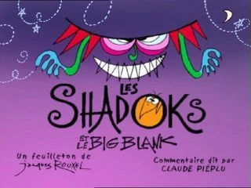

Les Shadoks et les Gibis en ont assez de vivre sur des planètes qui ne marchent pas bien. Ils décident de se rendre sur la Terre. Si les Gibis mettent rapidement au point leur fusée, les Shadoks piétinent, car la fusée mise au point par le Professeur Shadoko n'a pas de carburant. Après avoir essayé de voler le carburant puis la fusée des Gibis, les Shadoks arrivent finalement sur la Terre, mais en sont chassés, comme les Gibis, par Gégène.

Les Shadoks sont sur la Terre, mais Gégéne les voit d'un mauvais œil. La saison raconte la guerre entre le Shadoks et Gégène (et ses alliés les Gibis), ainsi comme le passage de Shadoks par leur refuge sur la Lune.
La saison contient aussi plusieurs épisodes dédiés au cours du Professeur Shadoko.
La saison conclut avec les Gibis et les Shadok qui décident de partir de la Terre (pour des raisons différentes).

Personnages comme le Chef Shadok, le Marin Shadok, le Professeur Shadoko et le Devin plombier sont mis dans les valises à ancêtres. Après presque 4000 générations dans l'espace,[1] les enfants de Shadoks, lassés de pomper dans le vide pour déplacer, se bâtissent eux-même une planète et commencent à l'habiter.[2] Mais ce n'est pas si évident, de gérer une planète toute neuve.
Il feront face à la culture, l'Ordinateur Shadok, la maladie cosmique, l'invasion de chapeaux non identifiés mais possiblement cosmiques, le loisir et le menuet, et la possible fin de leur nouvelle planète.

Un être cosmique, Big Blank, a décidé de réduire la planète Shadok à néant. Pour ce faire, il envoie une horde de tombovirus et fait dégringoler le ciel sur la planète Shadok.
Malgré les inventions du Professeur Shadoko, le Big Blank parvient à ses fins. Les Shadoks trouvent bien une autre planète, en forme de ruban, mais ils trépassent malgré tout à la fin, victimes de leur vieil ennemi Gégène qui leur envoie une nouvelle génération de virus psychologiques : les Zangsts. Seul le Marin Shadok et ses matelots en réchappent en empruntant un trou dans le néant. C'est sur un coucher de soleil sous-marin que s'achève définitivement la saga des Shadoks.